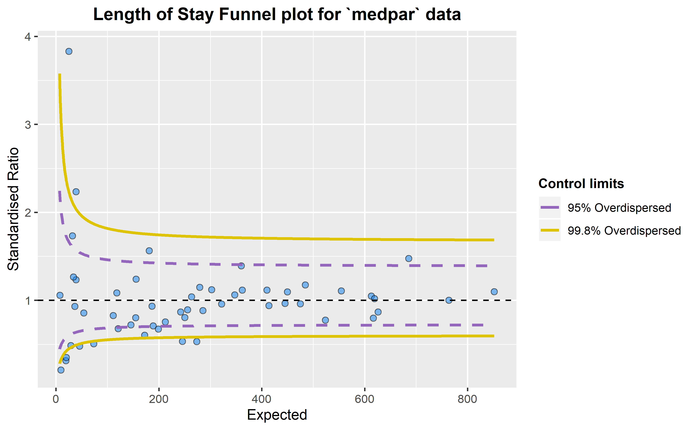

Funnel Plots
This package is the newer version of the older CMFunnels package. Development work will focus on this package from now on
This is an implementation of the funnel plot processes, and overdispersion methods described in:
Statistical methods for healthcare regulation: rating, screening and surveillance. Spiegelhalter et al (2012)
Funnel plots for comparing institutional performance. Spiegelhalter (2004)
Handling over-dispersion of performance indicators. Spiegelhalter (2005)
It draws funnel plots using ggplot2 and allows users to specify whether they want ‘overdispersed’ limits, setting a Winsorisation percentage (default 10%)
There is a variant method for this, used in the NHS’ Summary Hospital Mortality Indicator’
Summary Hospital-level Mortality Indicator, NHS Digital, SHMI specification
This uses a log-transformation and truncation of the distribution for calculating overdispersion, whereas Spieglehalter’s methods use a square-root and Winsorisation.
This package was originally developed for use in CM’s PhD project, but published on github in case it’s of use for others.
Please note that the ‘FunnelPlotR’ project is released with a Contributor Code of Conduct. By contributing to this project, you agree to abide by its terms.
More information available at https://chrismainey.github.io/FunnelPlotR/
Summary of Use
We will load the medpar dataset from Hilbe’s COUNT package. This is based on 1991 Medicare files for the state of Arizona (Hilbe, Joseph M (2014), Modeling Count Data, Cambridge University Press). We will first load the data and build a simple predictive model using a Poisson GLM.
library(FunnelPlotR)
library(COUNT)
library(ggplot2)
# lets use the 'medpar' dataset from the 'COUNT' package. Little reformatting needed
data(medpar)
medpar$provnum<-factor(medpar$provnum)
medpar$los<-as.numeric(medpar$los)
mod<- glm(los ~ hmo + died + age80 + factor(type), family="poisson", data=medpar)
summary(mod)##
## Call:
## glm(formula = los ~ hmo + died + age80 + factor(type), family = "poisson",
## data = medpar)
##
## Deviance Residuals:
## Min 1Q Median 3Q Max
## -5.7309 -1.9554 -0.5529 0.9717 14.5487
##
## Coefficients:
## Estimate Std. Error z value Pr(>|z|)
## (Intercept) 2.26875 0.01246 182.011 < 2e-16 ***
## hmo -0.07637 0.02393 -3.192 0.00142 **
## died -0.24574 0.01826 -13.458 < 2e-16 ***
## age80 -0.02141 0.02050 -1.045 0.29617
## factor(type)2 0.24921 0.02099 11.871 < 2e-16 ***
## factor(type)3 0.74869 0.02627 28.496 < 2e-16 ***
## ---
## Signif. codes: 0 '***' 0.001 '**' 0.01 '*' 0.05 '.' 0.1 ' ' 1
##
## (Dispersion parameter for poisson family taken to be 1)
##
## Null deviance: 8901.1 on 1494 degrees of freedom
## Residual deviance: 7977.7 on 1489 degrees of freedom
## AIC: 13705
##
## Number of Fisher Scoring iterations: 5Now we have a regression that we can use to get a predicted los that we will compare to observed los:
We can build a funnel plot object with standard Poisson limits, and outliers labelled.
a<-funnel_plot(numerator=medpar$los, denominator=medpar$prds, group = medpar$provnum,
title = 'Length of Stay Funnel plot for `medpar` data', Poisson_limits = TRUE,
OD_adjust = FALSE,label_outliers = TRUE, return_elements = "plot")
a
## $plot
That looks like too many outliers! There is more variation in our data than we would expect, and this is referred to as: overdispersion. So lets check for it:
The following ratio should be 1 if our data are conforming to Poisson distribution assumption (conditional mean = variance). If it is greater than 1, we have overdispersion:
This suggest the variance is 6.24 times the condition mean, and definitely overdispersed. This is a huge topic, but applying overdispersed limits using either SHMI or Spiegelhalter methods adjust for this by inflating the limits:
b<-funnel_plot(numerator=medpar$los, denominator=medpar$prds, group = medpar$provnum,
title = 'Length of Stay Funnel plot for `medpar` data', Poisson_limits = FALSE,
OD_adjust = TRUE, method = "SHMI",label_outliers = TRUE, return_elements = "plot")
b
## $plot
These methods can be used for any similar indicators, e.g. standardised mortality ratios, readmissions etc.
Please read the package documentation for more info, at: https://chrismainey.github.io/FunnelPlotR/